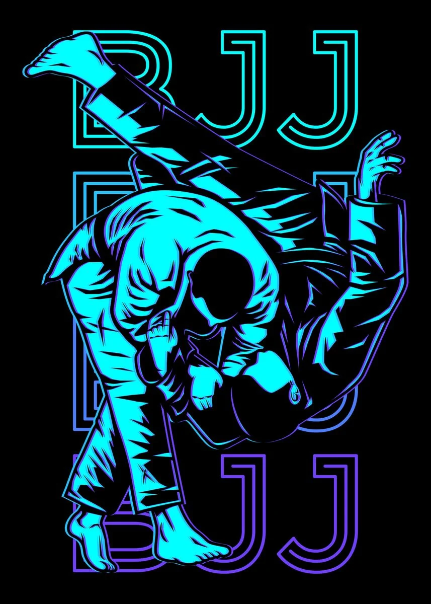

This is me, Dustin Chapman!
Hello everyone; a little about me. I just turned 35 years old and I am currently a Junior Software Engineer for H & R Block in Kansas City. I spend over 10 years working on diesel engines and electrical power generators and wanted to make a switch. I have been self-taught up to this point and really enjoy the field. I am married with three beautiful and crazy children. I have also been in the Kansas Air National Guard for almost 13 years and am currently deployed in Kuwait. By the way, after three deployments... I hate sand.

Aside from spending time with family and working, I enjoy anything that relates to fitness and am a purple belt in Brazilian Jiu-Jitsu (BJJ), which will be the topic of my webpage. BJJ has brought so much to my life, my family, and has revealed things about myself that otherwise may have never learned or appreciated. I plan to share some of that with you.

If you want to learn more, checkout these pages for more information:
Click Here for BJJ Instructionals
What is Brazilian Jiu-Jitsu?
Wikipedia for Brazilian Jiu-Jitsu